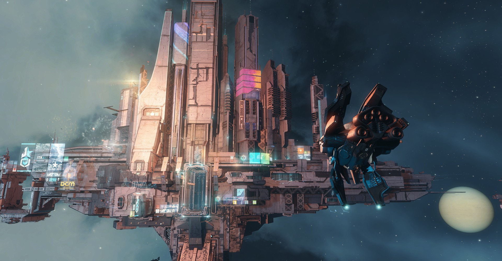
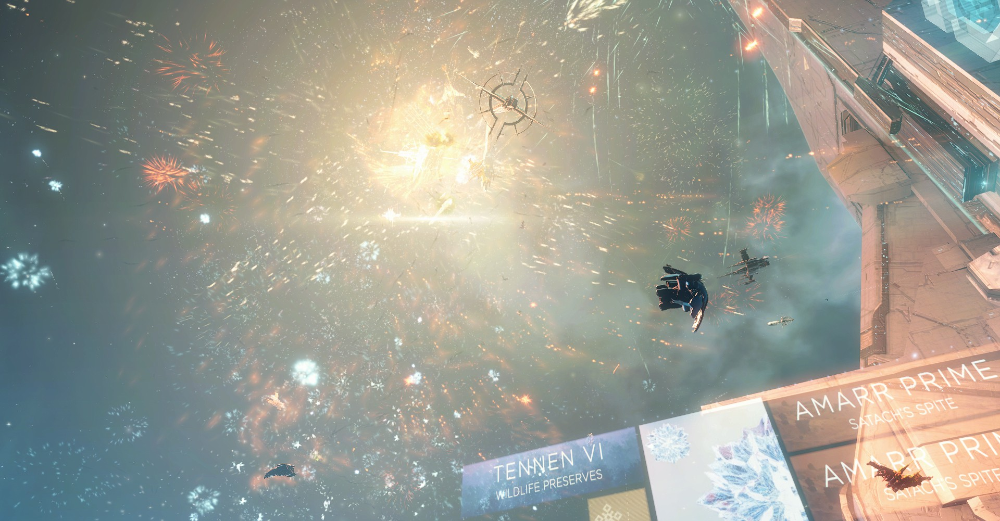
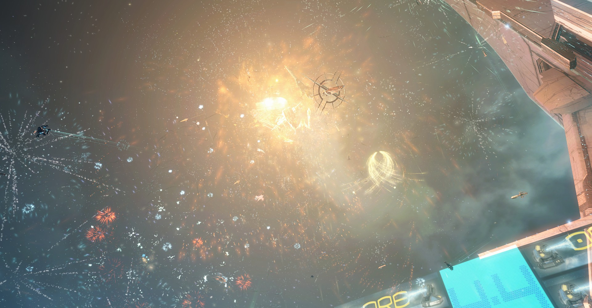
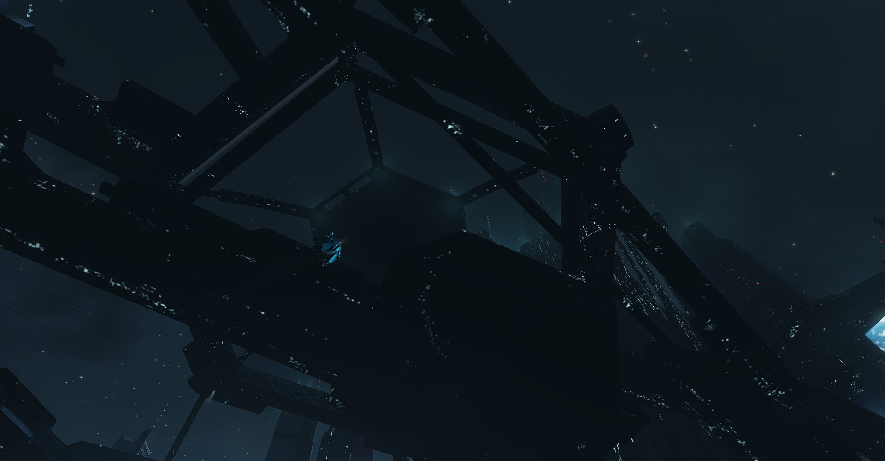

004：宇宙採掘バイトの11月月報
どうも、皆さん……鈴森シラセです。
私ね、少し前からEVE ONLINEっていうゲームをプレイしているんですね。
んで、先日……来る2020年12月8日。EVEの正式日本語サービスが始まりまして、プレイヤーによる記念イベントが開催されたんです。
今回は、そのイベントを見に行った時のこと、そして今後のニューエデン銀河に対する思いのほどをつらつらと書き綴っていこうと思います。
―――――――――――
私が初めてニューエデン ――EVE ONLINEの舞台となる遠未来のどこかの銀河―― の宇宙に飛び立ったのは2020年の11月初頭の事です。
以前からこのゲームの存在については何となく知っていたのですが、「素人には難しそう」と思って手を付けずにいました。
しかしその日は何を思ったか、突然思い立ったようにゲームをダウンロードし、アカウントを作成したのです。
ああいうなんだか分からない突然の行動力っていうのは目を見張るものがありますね。
そうして初めて出た宇宙はとても美しいものでした。
その後、商業ステーションへの行き方がわからず無法地帯で迷子になりかけたり、
無限に採掘をしようとしてグロッキーになりかけたり、
惑星開発を進めて不労所得を得ようとロクな資源もない惑星に入植してほったらかしたり、
(その入植地は未だに片づけないで放置しています)
初めてコーポレーションに所属して採掘艦隊のバイトに出た時には、作業中に寝落ちして勝手に縮こまったりもしました。
あの時全く動くことなく浮かんでいた私の船について、誰も言及してないってことは不問ってことですよね……。

ともあれ、そうして始めたパイロット生活がちょうど一か月へ到達するあたり。
少し前から噂に聞いていた、12月8日、EVEの正式日本語サービスが開始されました。
当日の夜には、日本人プレイヤーを中心として記念イベントが開催され、自分もそこに遊びに行ったんですね。
ニューエデン銀河において最大規模の商業都市、jitaの会場で行われたイベントに参加したんですが、

そりゃーもうすごかったです。
ガラにもなく感激してTwitterで荒ぶってました。
あらゆる宇宙船、プレイ歴が十年近いベテランも、始めたばかりのルーキーも集まり、花火を打ち上げているのです。
圧巻の光景でしたね。
日本語ヘルプチャットの参加人数も1000人を超え、これまでにないスピードでやり取りが進む。
新人があらゆる質問をし、ベテランがすさまじい勢いでそれに対応している。
なんというか、新しい時代が始まる瞬間に立ち会ったような気がして興奮してしまいました。

これから先、新しく参加したルーキーたちが成長し、ほんの少しだけ先にパイロットになった自分などあっという間に追いつかれ、追い越されることとなるかも知れない。
宇宙の勢力図も変化するかも知れません。